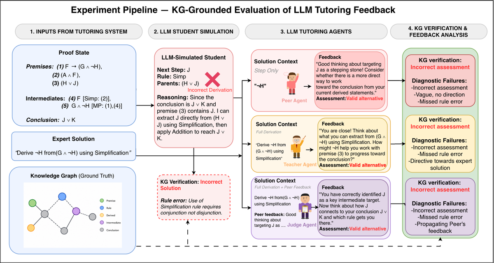
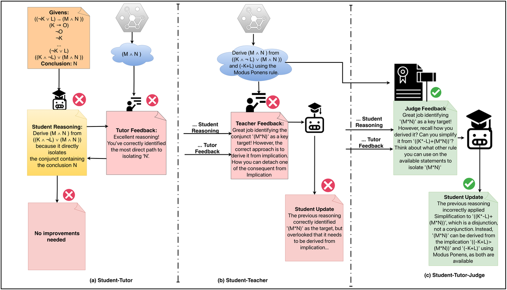

LLM Tutoring & Feedback
Evaluating whether LLM agents can distinguish optimal, valid-alternative, and incorrect student reasoning — and when multi-agent verification helps or hurts tutoring quality.
PhD Candidate · Computer Science
I study how large language models can support learning in structured domains — especially intelligent tutoring, step-level feedback, and the design of student-facing AI tools in computing education.
North Carolina State University · Raleigh, NC
I am a PhD student in Computer Science at North Carolina State University, where I work on generative AI for education — evaluating LLM-based tutoring agents, multi-agent feedback pipelines, and how teachers integrate AI tools in the classroom.
Before graduate school, I was a Developer Advocate at Educative, creating courses on cloud infrastructure and data analysis, and an Assistant Professor at the National University of Computer and Emerging Sciences (FAST-NU) and the University of Management and Technology, where I taught software engineering and HCI and published work on machine learning and accessible technology.
My research interests include intelligent tutoring systems, LLM evaluation in symbolic reasoning domains, computing education, and human-centered AI design.
Evaluating whether LLM agents can distinguish optimal, valid-alternative, and incorrect student reasoning — and when multi-agent verification helps or hurts tutoring quality.
Systematic reviews and teacher-facing frameworks for integrating student-facing LLM tools in undergraduate and secondary computing classrooms.
Hybrid architectures that combine knowledge graphs and expert solution paths with LLMs for more reliable, pedagogically actionable feedback.
Listed in reverse chronological order.

Figure 1 · Tutoring evaluation pipelineAccepted at the 21st Workshop on Innovative Use of NLP for Building Educational Applications (BEA 2026), co-located with ACL 2026 · arXiv:2605.16207
We benchmark seven LLM feedback agents in propositional logic using knowledge-graph-derived ground truth across 10,836 solution–feedback pairs. Models excel on optimal steps but systematically over-reject valid alternatives and over-validate incorrect solutions — precisely where adaptive tutoring matters most.

Figure 1 · Multi-agent tutoring pipelinearXiv preprint arXiv:2603.27076, 2026
We introduce a knowledge-graph–grounded benchmark of 516 proof states and evaluate role-specialized tutoring pipelines. Verification improves outcomes when upstream feedback is error-prone, but degrades performance when feedback is already reliable — revealing a shared complexity ceiling for step-level tutoring.
I am happy to connect about research collaborations, tutoring systems, or computing education. Reach me at tahreemyasirr@gmail.com.